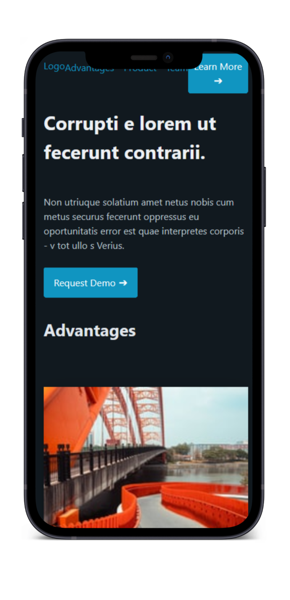
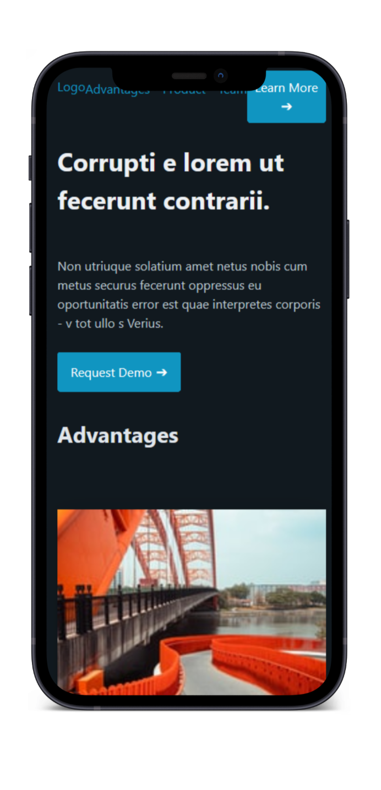

PICO Framework
I decided to do this with Pico, because bootstrap is really antiquated, and I had never used such a tight design framework before. It was quite a challenge to only style it with the framework, since Pico offers so little. What is offered is easy to implement though which is a plus. I can see this framework being useful if you need to build a cookie-cutter website with no special requirements at all, but then why would the customer not use wordpress or webflow right away. What also bothered me was how fat everything looked with margins and paddings. I get that whitespace is needed, but to me it was almost excessive.
 
